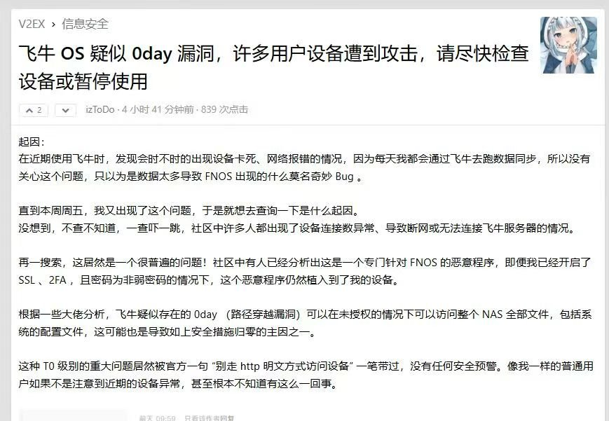
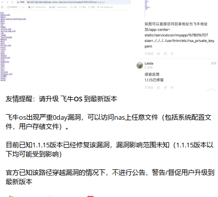
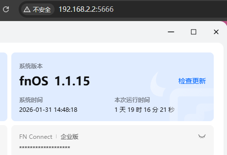
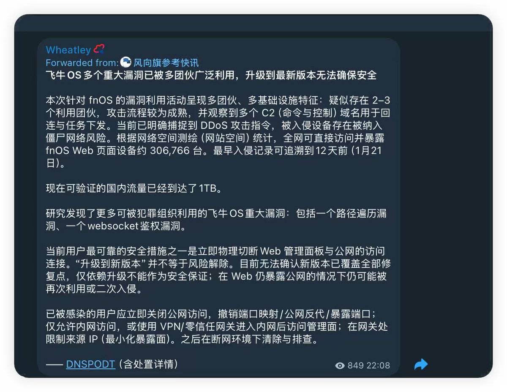

昨天听奶友的建议把飞牛私有云FnOS更新到最新版1.1.15-1493，结果还是存在极其严重WebSocket漏洞，已经把NAS关机了等白天睡醒了再来排查。
遗憾的是，飞牛官方到现在也没一个说法，最新版也无济于事😥
攻击者使用浏览器localStorage.fnos-Secret值作为Key，对JSON请求体进行HMAC-SHA256签名后，通过appcgi.dockermgr.systemMirrorAdd接口的url参数注入命令，如“https://t.co/uIDMy4KYtE ; /usr/bin/touch /tmp/hacked20260131 ; /usr/bin/echo”，成功在/tmp目录创建hacked20260131文件。
该漏洞需有效账户登录，且可能伴随认证绕过问题，导致系统Mirror添加功能被滥用。
PS：此漏洞管理组判断为极其严重的authorization bypass 漏洞，经管理组在本地环境中测试已成功，建议所有使用飞牛OS用户暂时关闭一切公网访问和内网穿透，并及时断网以免被当成“肉鸡”使。
遗憾的是，飞牛官方到现在也没一个说法，最新版也无济于事😥
攻击者使用浏览器localStorage.fnos-Secret值作为Key，对JSON请求体进行HMAC-SHA256签名后，通过appcgi.dockermgr.systemMirrorAdd接口的url参数注入命令，如“https://t.co/uIDMy4KYtE ; /usr/bin/touch /tmp/hacked20260131 ; /usr/bin/echo”，成功在/tmp目录创建hacked20260131文件。
该漏洞需有效账户登录，且可能伴随认证绕过问题，导致系统Mirror添加功能被滥用。
PS：此漏洞管理组判断为极其严重的authorization bypass 漏洞，经管理组在本地环境中测试已成功，建议所有使用飞牛OS用户暂时关闭一切公网访问和内网穿透，并及时断网以免被当成“肉鸡”使。



